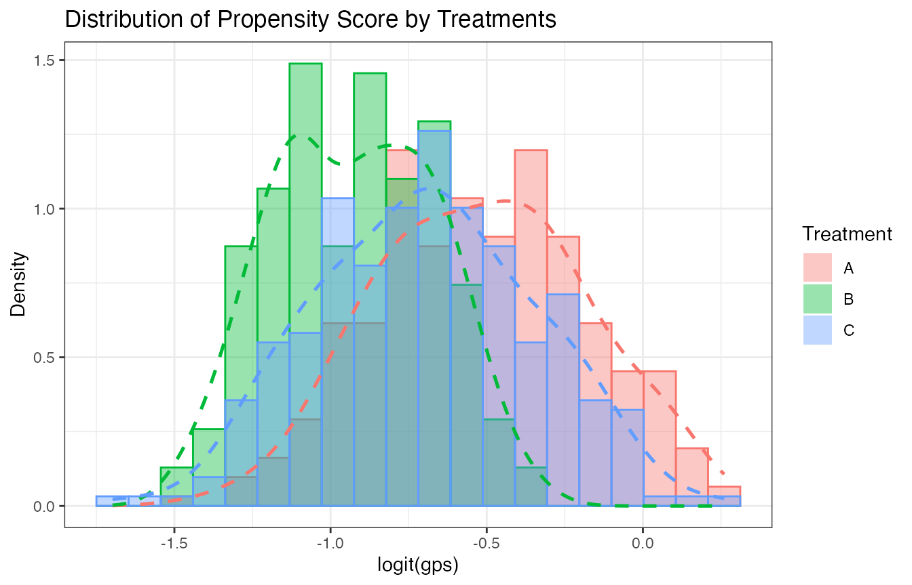
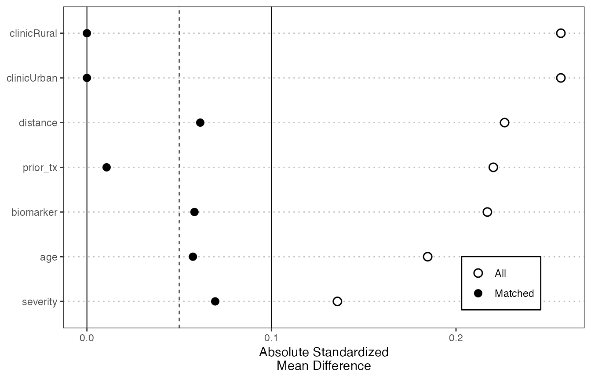

This article shows a minimal end-to-end workflow for
BC.GPSM (BC-GPSM). The example uses simulated
data with three treatment groups, six baseline covariates, and a
continuous outcome.
Simulate Example Data
set.seed(123)
n <- 300
z1 <- rnorm(n)
z2 <- rnorm(n)
age <- 50 + 8 * z1
biomarker <- 0.6 * z2 + rnorm(n, sd = 0.5)
severity <- 0.35 * z1 - 0.25 * z2 + rnorm(n, sd = 0.9)
distance <- runif(n, -1, 1)
prior_tx <- rbinom(n, 1, plogis(0.1 * z1 - 0.1 * z2))
clinic <- factor(rbinom(n, 1, 0.45), labels = c("Rural", "Urban"))
score <- cbind(
A = 0,
B = 0.35 * (0.05 * (age - 50) - 0.20 * biomarker +
0.18 * severity + 0.20 * prior_tx),
C = 0.35 * (-0.02 * (age - 50) + 0.25 * biomarker -
0.18 * distance + 0.18 * (clinic == "Urban"))
)
prob <- exp(score) / rowSums(exp(score))
trt <- apply(prob, 1, function(p) sample(c("A", "B", "C"), 1, prob = p))
dat <- data.frame(
trt = factor(trt, levels = c("A", "B", "C")),
age = age,
biomarker = biomarker,
severity = severity,
distance = distance,
prior_tx = prior_tx,
clinic = clinic
)
dat$y <- 1 + 0.5 * (dat$trt == "B") + 1.0 * (dat$trt == "C") +
0.03 * age - 0.4 * biomarker + 0.25 * severity - 0.2 * distance +
0.3 * prior_tx + 0.2 * (clinic == "Urban") + rnorm(n)
head(dat)
#> trt age biomarker severity distance prior_tx clinic y
#> 1 C 45.51619 0.10786082 -0.93005868 0.4646435 1 Rural 2.007534
#> 2 C 48.15858 -0.46528686 -0.60457237 0.2194214 0 Urban 2.981276
#> 3 B 62.46967 -0.57978839 1.04981690 -0.5512557 1 Rural 4.221387
#> 4 A 50.56407 -1.38954178 1.76295297 0.8323420 0 Urban 4.803756
#> 5 C 51.03430 0.13289695 1.13069590 0.6055220 1 Rural 5.526894
#> 6 A 63.72052 0.09334041 -0.04463277 -0.3751828 0 Urban 3.457639Fit the Main Estimator
Use dr_gpsm() for the cross-fitted estimator. In this
example, treatment A is used as the reference group, so
contrast labels such as BvA mean the estimated mean
potential outcome under B minus the estimated mean
potential outcome under A.
fit <- dr_gpsm(
data = dat,
treatment = 1,
treatment_ref = "A",
covariate = 2:7,
outcome = 8,
gps_model = "logit",
outcome_model = "lm",
folds = 2,
nboot = 50
)
data.frame(
contrast = names(fit$estimate),
estimate = fit$estimate,
ci_lower = fit$ci_lower,
ci_upper = fit$ci_upper,
row.names = NULL
)
#> contrast estimate ci_lower ci_upper
#> 1 BvA 0.3841538 0.09204874 0.560658
#> 2 CvA 1.0971292 0.85642357 1.374370
#> 3 CvB 0.7129754 0.42319271 1.012751For final analyses, use a larger nboot such as
500 or more. The smaller value above keeps the example
quick to run.
Inspect GPS Overlap
gps_pre_process() can fit a full-sample diagnostic GPS
model and add gps_ and loggps_ columns. These
diagnostic scores are useful for visualizing overlap;
dr_gpsm() itself uses cross-fitted GPS values
internally.
gps_dat <- gps_pre_process(
data = dat,
treatment = 1,
treatment_ref = "A",
covariate = 2:7,
gps_model = "logit"
)
gps_histogram(gps_dat, bins = 20)
Check Covariate Balance
Use balance_check_plot() to compare pairwise covariate
balance before and after nearest-neighbor matching. The plot reports
absolute standardized mean differences; smaller values indicate better
balance. The example standardizes covariates before matching so that
variables on different scales contribute comparably to the matching
distance.
balance_check_plot(
data = dat,
treatment = 1,
treatment_ref = "A",
covariate = 2:7,
match_on = "covariates",
standardize = TRUE,
style = "love"
)
The same function can also use existing loggps_*
columns. For example, after creating gps_dat above:
balance_check_plot(
data = gps_dat,
treatment = 1,
treatment_ref = "A",
covariate = 2:7,
match_on = "gps",
fit_gps = FALSE
)Choosing Options
Start with transparent models:
-
gps_model = "logit"for multinomial logistic GPS estimation; -
outcome_model = "lm"for a simple outcome-regression adjustment; -
treatment_refset explicitly when a natural control group exists.
Then compare sensitivity to more flexible nuisance models such as
gbm, rf, or gam when the sample
size is large enough to support them.
Optional Learners and Tuning
The baseline logit + lm workflow does not require the
optional modeling stack. Install only the packages needed by the
selected model or tuning path:
install.packages(c(
"gbm", "mgcv", "VGAM", "randomForest", "glmnet",
"caret", "ModelMetrics", "pROC", "foreach"
))xgboost and ranger provide additional GPS
and outcome-model backends:
install.packages(c("xgboost", "ranger"))These two backends are experimental and remain under active testing. For now, use them as sensitivity analyses and report their package versions and model settings whenever results are shared.